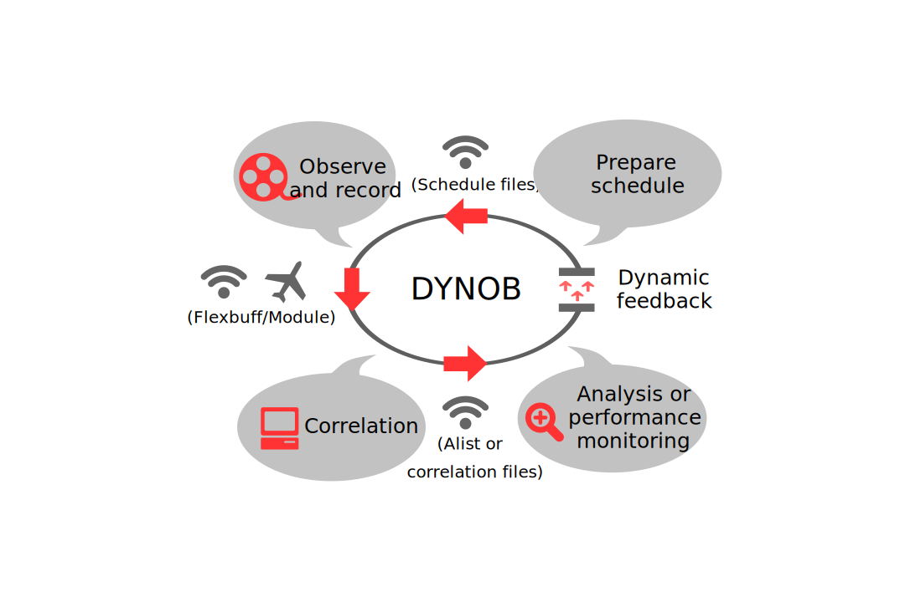

Program structure
Dynob can be used to automate each part (scheduling, correlation, data processing, and performance monitoring) separately, or the entire AuScope VLBI process loop shown in the figure below. The guide to automating the individual processes can be found in the left menu under the "General" category, followed by the three current applications of Dynob.
